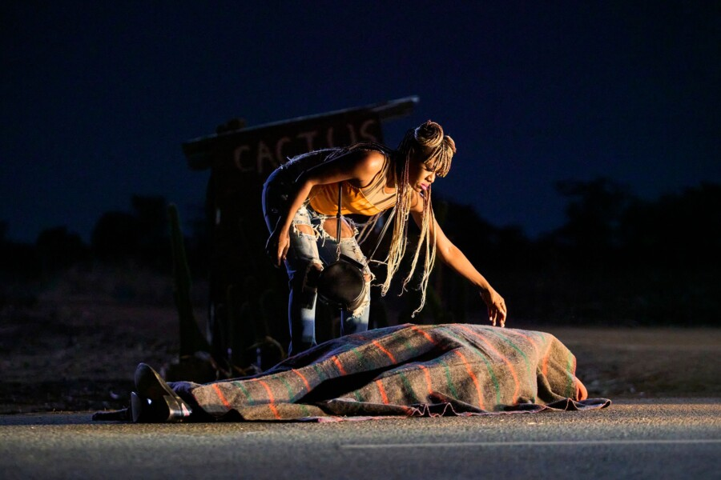

Aurora Film Society presents: On Becoming A Guinea Fowl
On Becoming a Guinea Fowl [2024 / Rungano Nyoni]
This black comedy drama opens with a Zambian woman, Shula, finding her Uncle Fred’s body on an empty road in the middle of the night. As funeral proceedings begin around them, she and her cousins bring to light the buried secrets of their middle-class Zambian family- wounds the elders would much rather ignore. Filmmaker Rungano Nyoni’s tells a surreal and vibrant story about reckoning with the lies we tell ourselves and about the silence that keeps families from breaking, but only in superficial ways, and with devastating consequences.
This film while dark has very funny moments as it explores death and cultural rituals, the conflict between the Fred’s sisters who mourn him and the nieces who were abused by him, as well as the class issues between Fred’s family of origin and the family of his very young wife. This beautifully shot modern fable peels back layers of silence and shame and comments on the very real cost of being vocal in a society that rewards silence.
The Aurora Film Society
Since 2018, the Aurora Film Society (AFS) has been broadening our community’s collective horizons by screening great movies together. For $70 a year, our subscribers are shown 12 carefully selected & curated movies, works that are historically important & groundbreaking, works that provide a window into far-flung cultures, works that are sometimes overlooked or unavailable to most audiences. The AFS puts a special emphasis on showing the sorts of luminous & idiosyncratic stories from beyond the mainstream that people of the Fox Valley area would normally not have a chance to see in a theatrical setting.
We screen every third Wednesday of the month at The Venue. Doors open at 6:30pm. Program begins at 7pm.
For questions and/or to subscribe, please email aurorafilmsociety@gmail.com
To see our current schedule & past movies, visit www.aurorafilmsociety.org